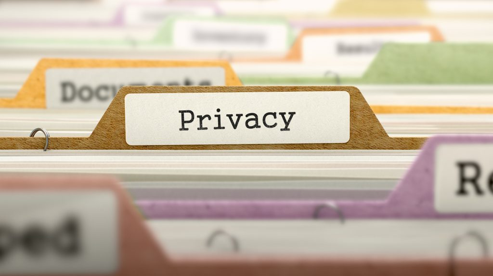

~PROTECTING PERSONAL DATA ONLINE~
Best Practices for Staying Safe Online

- protecting personal data: Online privacy
- Online privacy is the protection of an individual’s personal information and data while using the internet.
Here are some solutions:
- Use Strong and Unique Passwords
- Enable Two-Factor Authentication
- Avoid Public Wi-Fi for Sensitive Tasks
Use Strong and Unique Passwords
- Use different passwords for each account
- Include uppercase, lowercase, numbers, and symbols
- Use a password manager to store your passwords securely
Enable Two-Factor Authentication
- Adds extra protection to your accounts
- Requires a second code (like from your phone) when logging in
- Great for email, social media, and banking accounts
Avoid Public Wi-Fi for Sensitive Tasks
- Don’t access bank accounts or shop online using public Wi-Fi
- If you must use it, connect through a VPN (Virtual Private Network)
📺 Watch this YouTube video for extra knowledge!
📧 Email Me.If you need~
👉 Next Page